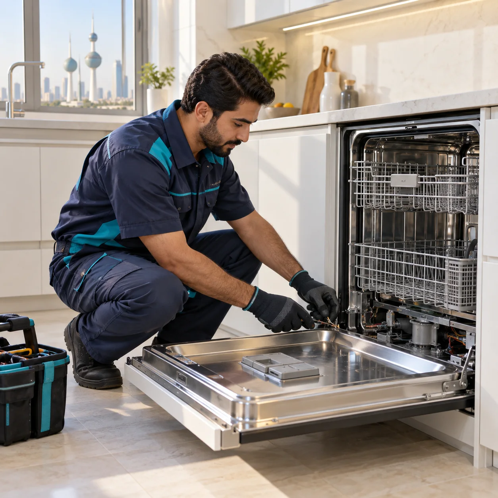
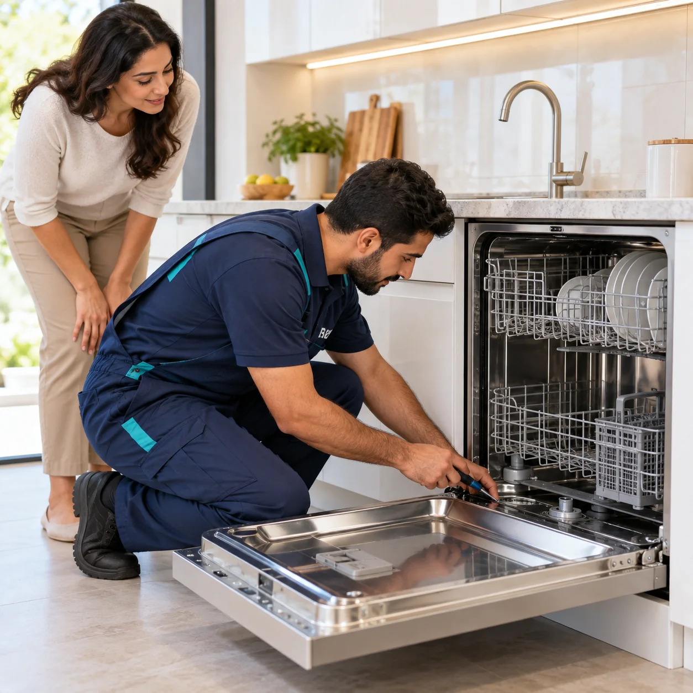
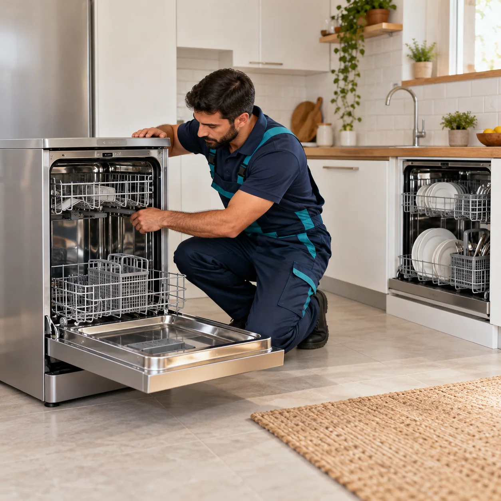
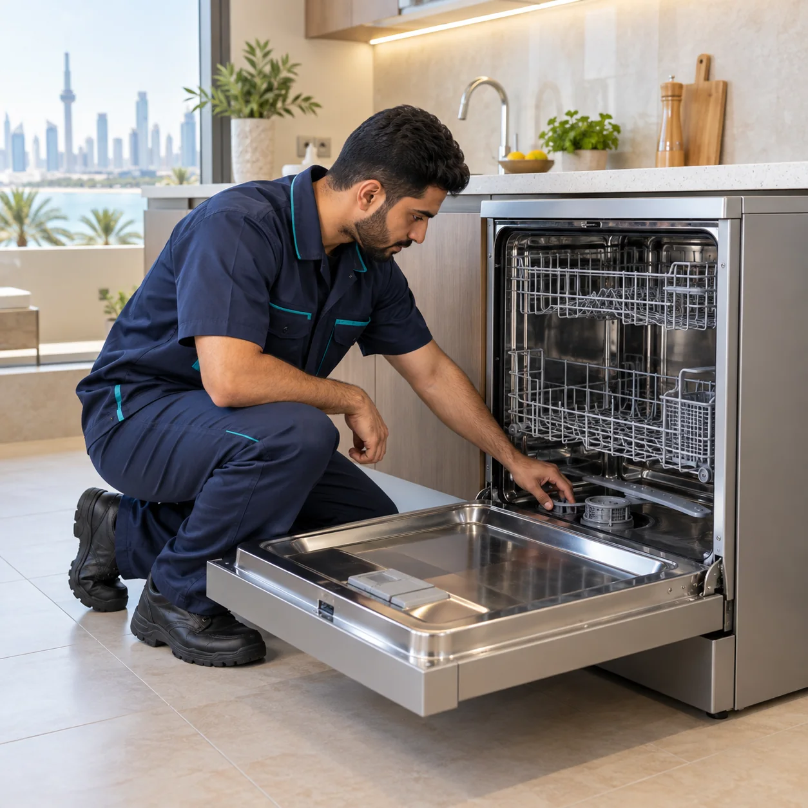

أعطال شائعة
- الماء لا يدخل إلى الغسالة أو لا يخرج منها.
- الصحون لا تنظف أو لا تجف بالشكل المطلوب.
- تسريب ماء أو توقف الجهاز أثناء الدورة.
- صوت غير طبيعي أو ظهور رمز عطل.
هل غسالة الصحون لا تنظف جيدًا أو لا تصرّف الماء؟ نفحص الجهاز في المنزل، ونحدد سبب المشكلة ونشرح خيار الإصلاح والتكلفة قبل البدء.

نحدد سبب العطل أولًا، ثم نوضح لك الإجراء والتكلفة قبل الإصلاح.
يفحص الفني الجهاز لتحديد المشكلة، ويشرح لك الحل والتكلفة قبل تنفيذ الإصلاح. القطع تُستبدل عند الحاجة ضمن خدمة الصيانة فقط ولا تُباع منفردة.
الماركات: نستقبل طلبات صيانة غسالات صحون من ماركات متعددة حسب نوع الجهاز والعطل.
أرسل نوع الجهاز ووصف العطل، ونرتب فحصًا منزليًا في الأحمدي والمناطق القريبة.

هل غسالة الصحون لا تنظف أو لا تصرف الماء؟ نفحص أعطال الغسالة المنزلية ونوضح سبب المشكلة والتكلفة قبل الإصلاح.
احجز عبر واتساب
هل برنامج غسالة الأطباق يتوقف أو لا تنظف الصحون؟ يحدد الفني سبب العطل بالفحص ويشرح لك الإجراء والتكلفة قبل العمل.
احجز عبر واتساب
هل غسالة الأطباق المدمجة أو المستقلة لا تعمل كما ينبغي؟ نفحص الأنواع المختلفة ونحدد العطل قبل اقتراح الإصلاح.
احجز عبر واتساب
هل غسالة صحون هام لا تنظف أو لا تصرف الماء؟ نفحص الجهاز ونوضح سبب المشكلة وخيار الإصلاح والتكلفة قبل البدء.
احجز عبر واتسابمعلومات تساعدك قبل حجز خدمة الصيانة.
نعم، نفحص أعطال دخول الماء وتصريفه، ونحدد سبب المشكلة قبل اقتراح الإصلاح.
نعم، نفحص دورة الغسيل وأسباب ضعف التنظيف أو التجفيف أو توقف البرنامج.
لا نبيع قطع الغيار بشكل منفصل. يتم استبدال القطع عند الحاجة ضمن خدمة الإصلاح فقط.
تواصل معنا بالاتصال أو واتساب، واذكر نوع الجهاز والعطل وموقعك لترتيب الفحص.
اتصل أو راسلنا عبر واتساب لتحديد موعد الخدمة.